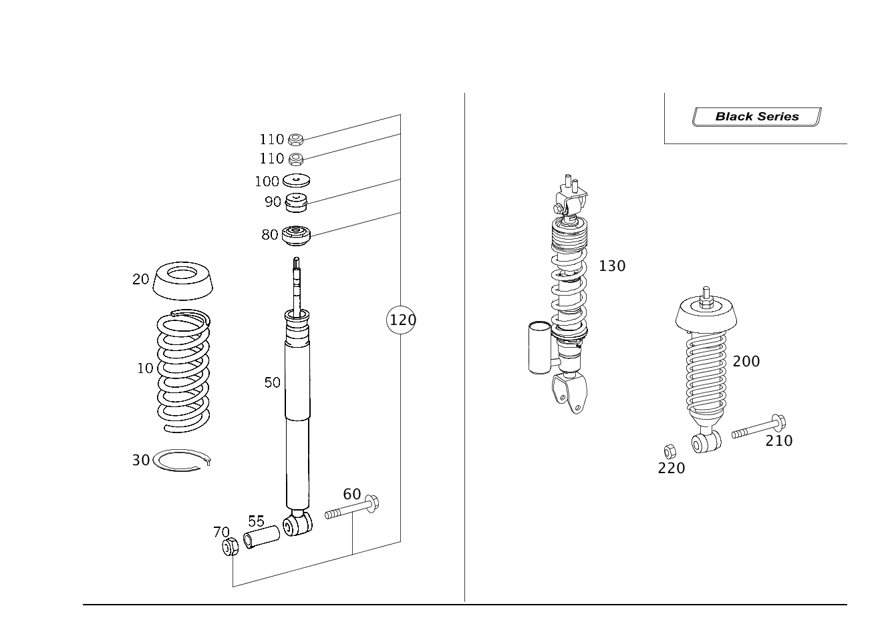

| № | Артикул | Название | Кол. | Примечание | Ограничение |
|---|---|---|---|---|---|
| 10 | A 210 324 34 04 | Задняя пружина (REAR SPRING) | 2 | ЦВЕТНАЯ МАРКИРОВКА: 3 X СИН. [001887] НОМЕР ДЕТАЛИ A 203 324 00 84 ТАКЖЕ ЗАКАЗАТЬ [002819] ПРИ ЗАМЕНЕ ПРУЖИНЫ(РЕССОРЫ) В ОБЯЗАТЕЛЬНОМ ПОРЯДКЕ ЗАМЕНЯТЬ ТАКЖЕ НИЖНЮЮ ПРОКЛАДКУ [T032] TO DETERMINE THE REAR SPRINGS, THE POINTS IN THE TABLE BELOW FOR EACH RESPECTIVE MODEL AND THE SPECIAL VERSIONS INSTALLED ARE TO BE ADDED UP ============================================================================================================================== MODEL POINTS TOTAL CODE SPECIALEQUIPMENT POINTS TOTAL 209.308 177 248 R. SEAT W. INTEG. C. SEAT 1 209.316 177 275 D. SEAT ELEC. LEFT.. 1 209.320 181 282 SKI BAG 1 209.341 180 349 EMERG.CALL SYSTEM 1 209.342 180 352 COMMAND 1 209.343 180 414 SLIDING ROOF 3 209.354 182 423 5-SP.. AUTOMATIC NOT.. 209.308 1 209.356 182 427 TRANS..AUTOMATIC.... 7-SP.. 1 209.361 177 474 PARTICLE FILTER 1 209.365 177 209.365+486+494 SPORT.SUSPEN. 3 209.372 183 540 R. WIN.ROLLER BL., ELEC.... 1 209.375 187 550 TRAILERHITCH....... 8 209.376 182 669 SPARE WHEEL 6 209.377 185 679 STRUCTURAL WH. 4 CYL.. 4 690 R.TIRE 4 810 SOUND S YSTEM 1 ============================================================== ============================================================== TABLE FOR REAR SPRINGS / RUBBER BOOT ============================================================== ============================================================== "NORMAL SUSPENSION" * POINTS TOTAL REAR SPRINGS SHIM -164 210 324 34 04 210 325 01 84 165-172 210 324 34 04 210 325 02 84 173-180 210 324 34 04 210 325 03 84 * 181-187 210 324 36 04 210 325 01 84 188-195 210 324 36 04 210 325 02 84 196-203 210 324 36 04 210 325 03 84 204- 210 324 36 04 210 325 04 84 ============================================================== ============================================================== "SPORTS SUSPENSION" CODE 486 * POINTS TOTAL REAR SPRINGS SHIM -159 203 324 05 04 210 325 01 84 160-164 203 324 05 04 210 325 02 84 165-174 203 324 05 04 210 325 03 84 * 175-182 210 324 34 04 210 325 01 84 183-190 210 324 34 04 210 325 02 84 191-197 210 324 34 04 210 325 03 84 * 198-205 210 324 36 04 210 325 01 84 206-213 210 324 36 04 210 325 02 84 214-220 210 324 36 04 210 325 03 84 221- 210 324 36 04 210 325 04 84 ============================================================== ============================================================== "SUSPENSION FOR GREATER GROUND CLEARANCE " CODE 482 * POINTS TOTAL REAR SPRINGS SHIM -162 210 324 36 04 210 325 01 84 163-170 210 324 36 04 210 325 02 84 171-177 210 324 36 04 210 325 03 84 178-185 210 324 36 04 210 325 04 84 * 186-193 208 324 03 04 210 325 02 84 194-200 208 324 03 04 210 325 03 84 201- 208 324 03 04 210 325 04 84 ============================================================================================================================== "V8 GAS. ENGINE 5.5 LTR" CODE M113+M55 OR M113+M55+494 AS OF C ODE 805 209.376 * POINTS TOTAL REAR SPRINGS SHIM -186 210 324 34 04 210 325 01 84 187-194 210 324 34 04 210 325 02 84 195-201 210 324 34 04 210 325 03 84 202- 210 324 34 04 210 325 04 84 ============================================================== ============================================================== "USA" CODE 494 * POINTS TOTAL REAR SPRINGS SHIM -168 210 324 34 04 210 325 01 84 169-175 210 324 34 04 210 325 02 84 176-183 210 324 34 04 210 325 03 84 * 184-190 210 324 36 04 210 325 01 84 191-198 210 324 36 04 210 325 02 84 199-205 210 324 36 04 210 325 03 84 206- 210 324 36 04 210 325 04 84 ============================================================================================================================== "USA V8 GAS. ENGINE 5.5 LTR" CODE M113+M55+494 TO CODE 804. 209.376 * POINTS TOTAL REAR SPRINGS SHIM -194 210 324 34 04 210 325 03 84 195-250 210 324 34 04 210 325 04 84 * ============================================================================================================================== CLK 63 AMG M156+M63 209.377 * POINTS TOTAL REAR SPRINGS SHIM -190 210 324 34 04 210 325 01 84 191-198 210 324 34 04 210 325 02 84 199-205 210 324 34 04 210 325 03 84 206- 210 324 34 04 210 325 04 84 ------------------------------------------------------------------------------------------------------------------------------ ------------------------------------------------------------------------------------------------------------------------------ | -(M113+M55/M156+M63/482/486/494) |
| 10 | A 210 324 36 04 | Задняя пружина (HELICAL SPRING) | 2 | ЦВЕТНАЯ МАРКИРОВКА: 2 X ЖЕЛТАЯ [001887] НОМЕР ДЕТАЛИ A 203 324 00 84 ТАКЖЕ ЗАКАЗАТЬ [002819] ПРИ ЗАМЕНЕ ПРУЖИНЫ(РЕССОРЫ) В ОБЯЗАТЕЛЬНОМ ПОРЯДКЕ ЗАМЕНЯТЬ ТАКЖЕ НИЖНЮЮ ПРОКЛАДКУ [T032] TO DETERMINE THE REAR SPRINGS, THE POINTS IN THE TABLE BELOW FOR EACH RESPECTIVE MODEL AND THE SPECIAL VERSIONS INSTALLED ARE TO BE ADDED UP ============================================================================================================================== MODEL POINTS TOTAL CODE SPECIALEQUIPMENT POINTS TOTAL 209.308 177 248 R. SEAT W. INTEG. C. SEAT 1 209.316 177 275 D. SEAT ELEC. LEFT.. 1 209.320 181 282 SKI BAG 1 209.341 180 349 EMERG.CALL SYSTEM 1 209.342 180 352 COMMAND 1 209.343 180 414 SLIDING ROOF 3 209.354 182 423 5-SP.. AUTOMATIC NOT.. 209.308 1 209.356 182 427 TRANS..AUTOMATIC.... 7-SP.. 1 209.361 177 474 PARTICLE FILTER 1 209.365 177 209.365+486+494 SPORT.SUSPEN. 3 209.372 183 540 R. WIN.ROLLER BL., ELEC.... 1 209.375 187 550 TRAILERHITCH....... 8 209.376 182 669 SPARE WHEEL 6 209.377 185 679 STRUCTURAL WH. 4 CYL.. 4 690 R.TIRE 4 810 SOUND S YSTEM 1 ============================================================== ============================================================== TABLE FOR REAR SPRINGS / RUBBER BOOT ============================================================== ============================================================== "NORMAL SUSPENSION" * POINTS TOTAL REAR SPRINGS SHIM -164 210 324 34 04 210 325 01 84 165-172 210 324 34 04 210 325 02 84 173-180 210 324 34 04 210 325 03 84 * 181-187 210 324 36 04 210 325 01 84 188-195 210 324 36 04 210 325 02 84 196-203 210 324 36 04 210 325 03 84 204- 210 324 36 04 210 325 04 84 ============================================================== ============================================================== "SPORTS SUSPENSION" CODE 486 * POINTS TOTAL REAR SPRINGS SHIM -159 203 324 05 04 210 325 01 84 160-164 203 324 05 04 210 325 02 84 165-174 203 324 05 04 210 325 03 84 * 175-182 210 324 34 04 210 325 01 84 183-190 210 324 34 04 210 325 02 84 191-197 210 324 34 04 210 325 03 84 * 198-205 210 324 36 04 210 325 01 84 206-213 210 324 36 04 210 325 02 84 214-220 210 324 36 04 210 325 03 84 221- 210 324 36 04 210 325 04 84 ============================================================== ============================================================== "SUSPENSION FOR GREATER GROUND CLEARANCE " CODE 482 * POINTS TOTAL REAR SPRINGS SHIM -162 210 324 36 04 210 325 01 84 163-170 210 324 36 04 210 325 02 84 171-177 210 324 36 04 210 325 03 84 178-185 210 324 36 04 210 325 04 84 * 186-193 208 324 03 04 210 325 02 84 194-200 208 324 03 04 210 325 03 84 201- 208 324 03 04 210 325 04 84 ============================================================================================================================== "V8 GAS. ENGINE 5.5 LTR" CODE M113+M55 OR M113+M55+494 AS OF C ODE 805 209.376 * POINTS TOTAL REAR SPRINGS SHIM -186 210 324 34 04 210 325 01 84 187-194 210 324 34 04 210 325 02 84 195-201 210 324 34 04 210 325 03 84 202- 210 324 34 04 210 325 04 84 ============================================================== ============================================================== "USA" CODE 494 * POINTS TOTAL REAR SPRINGS SHIM -168 210 324 34 04 210 325 01 84 169-175 210 324 34 04 210 325 02 84 176-183 210 324 34 04 210 325 03 84 * 184-190 210 324 36 04 210 325 01 84 191-198 210 324 36 04 210 325 02 84 199-205 210 324 36 04 210 325 03 84 206- 210 324 36 04 210 325 04 84 ============================================================================================================================== "USA V8 GAS. ENGINE 5.5 LTR" CODE M113+M55+494 TO CODE 804. 209.376 * POINTS TOTAL REAR SPRINGS SHIM -194 210 324 34 04 210 325 03 84 195-250 210 324 34 04 210 325 04 84 * ============================================================================================================================== CLK 63 AMG M156+M63 209.377 * POINTS TOTAL REAR SPRINGS SHIM -190 210 324 34 04 210 325 01 84 191-198 210 324 34 04 210 325 02 84 199-205 210 324 34 04 210 325 03 84 206- 210 324 34 04 210 325 04 84 ------------------------------------------------------------------------------------------------------------------------------ ------------------------------------------------------------------------------------------------------------------------------ | -(M113+M55/M156+M63/482/486/494) |
| 10 | A 210 324 34 04 | Задняя пружина (REAR SPRING) | 2 | ЦВЕТНАЯ МАРКИРОВКА: 3 X СИН. [T032] * ============================================================================================================================== ------------------------------------------------------------------------------------------------------------------------------ ------------------------------------------------------------------------------------------------------------------------------ [001887] НОМЕР ДЕТАЛИ A 203 324 00 84 ТАКЖЕ ЗАКАЗАТЬ [002819] ПРИ ЗАМЕНЕ ПРУЖИНЫ(РЕССОРЫ) В ОБЯЗАТЕЛЬНОМ ПОРЯДКЕ ЗАМЕНЯТЬ ТАКЖЕ НИЖНЮЮ ПРОКЛАДКУ | 486+-(M113+M55/M156+M63) |
| 10 | A 210 324 36 04 | Задняя пружина (HELICAL SPRING) | 2 | ЦВЕТНАЯ МАРКИРОВКА: 2 X ЖЕЛТАЯ [T032] * ============================================================================================================================== ------------------------------------------------------------------------------------------------------------------------------ ------------------------------------------------------------------------------------------------------------------------------ [001887] НОМЕР ДЕТАЛИ A 203 324 00 84 ТАКЖЕ ЗАКАЗАТЬ [002819] ПРИ ЗАМЕНЕ ПРУЖИНЫ(РЕССОРЫ) В ОБЯЗАТЕЛЬНОМ ПОРЯДКЕ ЗАМЕНЯТЬ ТАКЖЕ НИЖНЮЮ ПРОКЛАДКУ | 486+-(M113+M55/M156+M63) |
| 10 | A 203 324 05 04 | Задняя пружина (REAR SPRING) | 2 | ЦВЕТ.ОБОЗНАЧ.:1 X СИН. [T032] * ============================================================================================================================== ------------------------------------------------------------------------------------------------------------------------------ ------------------------------------------------------------------------------------------------------------------------------ [001887] НОМЕР ДЕТАЛИ A 203 324 00 84 ТАКЖЕ ЗАКАЗАТЬ [002819] ПРИ ЗАМЕНЕ ПРУЖИНЫ(РЕССОРЫ) В ОБЯЗАТЕЛЬНОМ ПОРЯДКЕ ЗАМЕНЯТЬ ТАКЖЕ НИЖНЮЮ ПРОКЛАДКУ | 486+-(M113+M55/M156+M63) |
| 10 | A 210 324 36 04 | Задняя пружина (HELICAL SPRING) | 2 | ЦВЕТНАЯ МАРКИРОВКА: 2 X ЖЕЛТАЯ [001887] НОМЕР ДЕТАЛИ A 203 324 00 84 ТАКЖЕ ЗАКАЗАТЬ [002819] ПРИ ЗАМЕНЕ ПРУЖИНЫ(РЕССОРЫ) В ОБЯЗАТЕЛЬНОМ ПОРЯДКЕ ЗАМЕНЯТЬ ТАКЖЕ НИЖНЮЮ ПРОКЛАДКУ [T032] TO DETERMINE THE REAR SPRINGS, THE POINTS IN THE TABLE BELOW FOR EACH RESPECTIVE MODEL AND THE SPECIAL VERSIONS INSTALLED ARE TO BE ADDED UP ============================================================================================================================== MODEL POINTS TOTAL CODE SPECIALEQUIPMENT POINTS TOTAL 209.308 177 248 R. SEAT W. INTEG. C. SEAT 1 209.316 177 275 D. SEAT ELEC. LEFT.. 1 209.320 181 282 SKI BAG 1 209.341 180 349 EMERG.CALL SYSTEM 1 209.342 180 352 COMMAND 1 209.343 180 414 SLIDING ROOF 3 209.354 182 423 5-SP.. AUTOMATIC NOT.. 209.308 1 209.356 182 427 TRANS..AUTOMATIC.... 7-SP.. 1 209.361 177 474 PARTICLE FILTER 1 209.365 177 209.365+486+494 SPORT.SUSPEN. 3 209.372 183 540 R. WIN.ROLLER BL., ELEC.... 1 209.375 187 550 TRAILERHITCH....... 8 209.376 182 669 SPARE WHEEL 6 209.377 185 679 STRUCTURAL WH. 4 CYL.. 4 690 R.TIRE 4 810 SOUND S YSTEM 1 ============================================================== ============================================================== TABLE FOR REAR SPRINGS / RUBBER BOOT ============================================================== ============================================================== "NORMAL SUSPENSION" * POINTS TOTAL REAR SPRINGS SHIM -164 210 324 34 04 210 325 01 84 165-172 210 324 34 04 210 325 02 84 173-180 210 324 34 04 210 325 03 84 * 181-187 210 324 36 04 210 325 01 84 188-195 210 324 36 04 210 325 02 84 196-203 210 324 36 04 210 325 03 84 204- 210 324 36 04 210 325 04 84 ============================================================== ============================================================== "SPORTS SUSPENSION" CODE 486 * POINTS TOTAL REAR SPRINGS SHIM -159 203 324 05 04 210 325 01 84 160-164 203 324 05 04 210 325 02 84 165-174 203 324 05 04 210 325 03 84 * 175-182 210 324 34 04 210 325 01 84 183-190 210 324 34 04 210 325 02 84 191-197 210 324 34 04 210 325 03 84 * 198-205 210 324 36 04 210 325 01 84 206-213 210 324 36 04 210 325 02 84 214-220 210 324 36 04 210 325 03 84 221- 210 324 36 04 210 325 04 84 ============================================================== ============================================================== "SUSPENSION FOR GREATER GROUND CLEARANCE " CODE 482 * POINTS TOTAL REAR SPRINGS SHIM -162 210 324 36 04 210 325 01 84 163-170 210 324 36 04 210 325 02 84 171-177 210 324 36 04 210 325 03 84 178-185 210 324 36 04 210 325 04 84 * 186-193 208 324 03 04 210 325 02 84 194-200 208 324 03 04 210 325 03 84 201- 208 324 03 04 210 325 04 84 ============================================================================================================================== "V8 GAS. ENGINE 5.5 LTR" CODE M113+M55 OR M113+M55+494 AS OF C ODE 805 209.376 * POINTS TOTAL REAR SPRINGS SHIM -186 210 324 34 04 210 325 01 84 187-194 210 324 34 04 210 325 02 84 195-201 210 324 34 04 210 325 03 84 202- 210 324 34 04 210 325 04 84 ============================================================== ============================================================== "USA" CODE 494 * POINTS TOTAL REAR SPRINGS SHIM -168 210 324 34 04 210 325 01 84 169-175 210 324 34 04 210 325 02 84 176-183 210 324 34 04 210 325 03 84 * 184-190 210 324 36 04 210 325 01 84 191-198 210 324 36 04 210 325 02 84 199-205 210 324 36 04 210 325 03 84 206- 210 324 36 04 210 325 04 84 ============================================================================================================================== "USA V8 GAS. ENGINE 5.5 LTR" CODE M113+M55+494 TO CODE 804. 209.376 * POINTS TOTAL REAR SPRINGS SHIM -194 210 324 34 04 210 325 03 84 195-250 210 324 34 04 210 325 04 84 * ============================================================================================================================== CLK 63 AMG M156+M63 209.377 * POINTS TOTAL REAR SPRINGS SHIM -190 210 324 34 04 210 325 01 84 191-198 210 324 34 04 210 325 02 84 199-205 210 324 34 04 210 325 03 84 206- 210 324 34 04 210 325 04 84 ------------------------------------------------------------------------------------------------------------------------------ ------------------------------------------------------------------------------------------------------------------------------ | 482+-(M113+M55/M156+M63) |
| 10 | A 208 324 03 04 | Задняя пружина (REAR SPRING) | 2 | ЦВЕТОВАЯ МАРКИРОВКА: 2 X СИНИЙ / 2 X ЗЕЛЁНЫЙ [001887] НОМЕР ДЕТАЛИ A 203 324 00 84 ТАКЖЕ ЗАКАЗАТЬ [002819] ПРИ ЗАМЕНЕ ПРУЖИНЫ(РЕССОРЫ) В ОБЯЗАТЕЛЬНОМ ПОРЯДКЕ ЗАМЕНЯТЬ ТАКЖЕ НИЖНЮЮ ПРОКЛАДКУ [T032] TO DETERMINE THE REAR SPRINGS, THE POINTS IN THE TABLE BELOW FOR EACH RESPECTIVE MODEL AND THE SPECIAL VERSIONS INSTALLED ARE TO BE ADDED UP ============================================================================================================================== MODEL POINTS TOTAL CODE SPECIALEQUIPMENT POINTS TOTAL 209.308 177 248 R. SEAT W. INTEG. C. SEAT 1 209.316 177 275 D. SEAT ELEC. LEFT.. 1 209.320 181 282 SKI BAG 1 209.341 180 349 EMERG.CALL SYSTEM 1 209.342 180 352 COMMAND 1 209.343 180 414 SLIDING ROOF 3 209.354 182 423 5-SP.. AUTOMATIC NOT.. 209.308 1 209.356 182 427 TRANS..AUTOMATIC.... 7-SP.. 1 209.361 177 474 PARTICLE FILTER 1 209.365 177 209.365+486+494 SPORT.SUSPEN. 3 209.372 183 540 R. WIN.ROLLER BL., ELEC.... 1 209.375 187 550 TRAILERHITCH....... 8 209.376 182 669 SPARE WHEEL 6 209.377 185 679 STRUCTURAL WH. 4 CYL.. 4 690 R.TIRE 4 810 SOUND S YSTEM 1 ============================================================== ============================================================== TABLE FOR REAR SPRINGS / RUBBER BOOT ============================================================== ============================================================== "NORMAL SUSPENSION" * POINTS TOTAL REAR SPRINGS SHIM -164 210 324 34 04 210 325 01 84 165-172 210 324 34 04 210 325 02 84 173-180 210 324 34 04 210 325 03 84 * 181-187 210 324 36 04 210 325 01 84 188-195 210 324 36 04 210 325 02 84 196-203 210 324 36 04 210 325 03 84 204- 210 324 36 04 210 325 04 84 ============================================================== ============================================================== "SPORTS SUSPENSION" CODE 486 * POINTS TOTAL REAR SPRINGS SHIM -159 203 324 05 04 210 325 01 84 160-164 203 324 05 04 210 325 02 84 165-174 203 324 05 04 210 325 03 84 * 175-182 210 324 34 04 210 325 01 84 183-190 210 324 34 04 210 325 02 84 191-197 210 324 34 04 210 325 03 84 * 198-205 210 324 36 04 210 325 01 84 206-213 210 324 36 04 210 325 02 84 214-220 210 324 36 04 210 325 03 84 221- 210 324 36 04 210 325 04 84 ============================================================== ============================================================== "SUSPENSION FOR GREATER GROUND CLEARANCE " CODE 482 * POINTS TOTAL REAR SPRINGS SHIM -162 210 324 36 04 210 325 01 84 163-170 210 324 36 04 210 325 02 84 171-177 210 324 36 04 210 325 03 84 178-185 210 324 36 04 210 325 04 84 * 186-193 208 324 03 04 210 325 02 84 194-200 208 324 03 04 210 325 03 84 201- 208 324 03 04 210 325 04 84 ============================================================================================================================== "V8 GAS. ENGINE 5.5 LTR" CODE M113+M55 OR M113+M55+494 AS OF C ODE 805 209.376 * POINTS TOTAL REAR SPRINGS SHIM -186 210 324 34 04 210 325 01 84 187-194 210 324 34 04 210 325 02 84 195-201 210 324 34 04 210 325 03 84 202- 210 324 34 04 210 325 04 84 ============================================================== ============================================================== "USA" CODE 494 * POINTS TOTAL REAR SPRINGS SHIM -168 210 324 34 04 210 325 01 84 169-175 210 324 34 04 210 325 02 84 176-183 210 324 34 04 210 325 03 84 * 184-190 210 324 36 04 210 325 01 84 191-198 210 324 36 04 210 325 02 84 199-205 210 324 36 04 210 325 03 84 206- 210 324 36 04 210 325 04 84 ============================================================================================================================== "USA V8 GAS. ENGINE 5.5 LTR" CODE M113+M55+494 TO CODE 804. 209.376 * POINTS TOTAL REAR SPRINGS SHIM -194 210 324 34 04 210 325 03 84 195-250 210 324 34 04 210 325 04 84 * ============================================================================================================================== CLK 63 AMG M156+M63 209.377 * POINTS TOTAL REAR SPRINGS SHIM -190 210 324 34 04 210 325 01 84 191-198 210 324 34 04 210 325 02 84 199-205 210 324 34 04 210 325 03 84 206- 210 324 34 04 210 325 04 84 ------------------------------------------------------------------------------------------------------------------------------ ------------------------------------------------------------------------------------------------------------------------------ | 482+-(M113+M55/M156+M63) |
| 10 | A 210 324 34 04 | Задняя пружина (REAR SPRING) | 2 | ЦВЕТНАЯ МАРКИРОВКА: 3 X СИН. [001887] НОМЕР ДЕТАЛИ A 203 324 00 84 ТАКЖЕ ЗАКАЗАТЬ [002819] ПРИ ЗАМЕНЕ ПРУЖИНЫ(РЕССОРЫ) В ОБЯЗАТЕЛЬНОМ ПОРЯДКЕ ЗАМЕНЯТЬ ТАКЖЕ НИЖНЮЮ ПРОКЛАДКУ [T032] TO DETERMINE THE REAR SPRINGS, THE POINTS IN THE TABLE BELOW FOR EACH RESPECTIVE MODEL AND THE SPECIAL VERSIONS INSTALLED ARE TO BE ADDED UP ============================================================================================================================== MODEL POINTS TOTAL CODE SPECIALEQUIPMENT POINTS TOTAL 209.308 177 248 R. SEAT W. INTEG. C. SEAT 1 209.316 177 275 D. SEAT ELEC. LEFT.. 1 209.320 181 282 SKI BAG 1 209.341 180 349 EMERG.CALL SYSTEM 1 209.342 180 352 COMMAND 1 209.343 180 414 SLIDING ROOF 3 209.354 182 423 5-SP.. AUTOMATIC NOT.. 209.308 1 209.356 182 427 TRANS..AUTOMATIC.... 7-SP.. 1 209.361 177 474 PARTICLE FILTER 1 209.365 177 209.365+486+494 SPORT.SUSPEN. 3 209.372 183 540 R. WIN.ROLLER BL., ELEC.... 1 209.375 187 550 TRAILERHITCH....... 8 209.376 182 669 SPARE WHEEL 6 209.377 185 679 STRUCTURAL WH. 4 CYL.. 4 690 R.TIRE 4 810 SOUND S YSTEM 1 ============================================================== ============================================================== TABLE FOR REAR SPRINGS / RUBBER BOOT ============================================================== ============================================================== "NORMAL SUSPENSION" * POINTS TOTAL REAR SPRINGS SHIM -164 210 324 34 04 210 325 01 84 165-172 210 324 34 04 210 325 02 84 173-180 210 324 34 04 210 325 03 84 * 181-187 210 324 36 04 210 325 01 84 188-195 210 324 36 04 210 325 02 84 196-203 210 324 36 04 210 325 03 84 204- 210 324 36 04 210 325 04 84 ============================================================== ============================================================== "SPORTS SUSPENSION" CODE 486 * POINTS TOTAL REAR SPRINGS SHIM -159 203 324 05 04 210 325 01 84 160-164 203 324 05 04 210 325 02 84 165-174 203 324 05 04 210 325 03 84 * 175-182 210 324 34 04 210 325 01 84 183-190 210 324 34 04 210 325 02 84 191-197 210 324 34 04 210 325 03 84 * 198-205 210 324 36 04 210 325 01 84 206-213 210 324 36 04 210 325 02 84 214-220 210 324 36 04 210 325 03 84 221- 210 324 36 04 210 325 04 84 ============================================================== ============================================================== "SUSPENSION FOR GREATER GROUND CLEARANCE " CODE 482 * POINTS TOTAL REAR SPRINGS SHIM -162 210 324 36 04 210 325 01 84 163-170 210 324 36 04 210 325 02 84 171-177 210 324 36 04 210 325 03 84 178-185 210 324 36 04 210 325 04 84 * 186-193 208 324 03 04 210 325 02 84 194-200 208 324 03 04 210 325 03 84 201- 208 324 03 04 210 325 04 84 ============================================================================================================================== "V8 GAS. ENGINE 5.5 LTR" CODE M113+M55 OR M113+M55+494 AS OF C ODE 805 209.376 * POINTS TOTAL REAR SPRINGS SHIM -186 210 324 34 04 210 325 01 84 187-194 210 324 34 04 210 325 02 84 195-201 210 324 34 04 210 325 03 84 202- 210 324 34 04 210 325 04 84 ============================================================== ============================================================== "USA" CODE 494 * POINTS TOTAL REAR SPRINGS SHIM -168 210 324 34 04 210 325 01 84 169-175 210 324 34 04 210 325 02 84 176-183 210 324 34 04 210 325 03 84 * 184-190 210 324 36 04 210 325 01 84 191-198 210 324 36 04 210 325 02 84 199-205 210 324 36 04 210 325 03 84 206- 210 324 36 04 210 325 04 84 ============================================================================================================================== "USA V8 GAS. ENGINE 5.5 LTR" CODE M113+M55+494 TO CODE 804. 209.376 * POINTS TOTAL REAR SPRINGS SHIM -194 210 324 34 04 210 325 03 84 195-250 210 324 34 04 210 325 04 84 * ============================================================================================================================== CLK 63 AMG M156+M63 209.377 * POINTS TOTAL REAR SPRINGS SHIM -190 210 324 34 04 210 325 01 84 191-198 210 324 34 04 210 325 02 84 199-205 210 324 34 04 210 325 03 84 206- 210 324 34 04 210 325 04 84 ------------------------------------------------------------------------------------------------------------------------------ ------------------------------------------------------------------------------------------------------------------------------ | 494+-(M113+M55/M156+M63) |
| 10 | A 210 324 36 04 | Задняя пружина (HELICAL SPRING) | 2 | ЦВЕТНАЯ МАРКИРОВКА: 2 X ЖЕЛТАЯ [001887] НОМЕР ДЕТАЛИ A 203 324 00 84 ТАКЖЕ ЗАКАЗАТЬ [002819] ПРИ ЗАМЕНЕ ПРУЖИНЫ(РЕССОРЫ) В ОБЯЗАТЕЛЬНОМ ПОРЯДКЕ ЗАМЕНЯТЬ ТАКЖЕ НИЖНЮЮ ПРОКЛАДКУ [T032] TO DETERMINE THE REAR SPRINGS, THE POINTS IN THE TABLE BELOW FOR EACH RESPECTIVE MODEL AND THE SPECIAL VERSIONS INSTALLED ARE TO BE ADDED UP ============================================================================================================================== MODEL POINTS TOTAL CODE SPECIALEQUIPMENT POINTS TOTAL 209.308 177 248 R. SEAT W. INTEG. C. SEAT 1 209.316 177 275 D. SEAT ELEC. LEFT.. 1 209.320 181 282 SKI BAG 1 209.341 180 349 EMERG.CALL SYSTEM 1 209.342 180 352 COMMAND 1 209.343 180 414 SLIDING ROOF 3 209.354 182 423 5-SP.. AUTOMATIC NOT.. 209.308 1 209.356 182 427 TRANS..AUTOMATIC.... 7-SP.. 1 209.361 177 474 PARTICLE FILTER 1 209.365 177 209.365+486+494 SPORT.SUSPEN. 3 209.372 183 540 R. WIN.ROLLER BL., ELEC.... 1 209.375 187 550 TRAILERHITCH....... 8 209.376 182 669 SPARE WHEEL 6 209.377 185 679 STRUCTURAL WH. 4 CYL.. 4 690 R.TIRE 4 810 SOUND S YSTEM 1 ============================================================== ============================================================== TABLE FOR REAR SPRINGS / RUBBER BOOT ============================================================== ============================================================== "NORMAL SUSPENSION" * POINTS TOTAL REAR SPRINGS SHIM -164 210 324 34 04 210 325 01 84 165-172 210 324 34 04 210 325 02 84 173-180 210 324 34 04 210 325 03 84 * 181-187 210 324 36 04 210 325 01 84 188-195 210 324 36 04 210 325 02 84 196-203 210 324 36 04 210 325 03 84 204- 210 324 36 04 210 325 04 84 ============================================================== ============================================================== "SPORTS SUSPENSION" CODE 486 * POINTS TOTAL REAR SPRINGS SHIM -159 203 324 05 04 210 325 01 84 160-164 203 324 05 04 210 325 02 84 165-174 203 324 05 04 210 325 03 84 * 175-182 210 324 34 04 210 325 01 84 183-190 210 324 34 04 210 325 02 84 191-197 210 324 34 04 210 325 03 84 * 198-205 210 324 36 04 210 325 01 84 206-213 210 324 36 04 210 325 02 84 214-220 210 324 36 04 210 325 03 84 221- 210 324 36 04 210 325 04 84 ============================================================== ============================================================== "SUSPENSION FOR GREATER GROUND CLEARANCE " CODE 482 * POINTS TOTAL REAR SPRINGS SHIM -162 210 324 36 04 210 325 01 84 163-170 210 324 36 04 210 325 02 84 171-177 210 324 36 04 210 325 03 84 178-185 210 324 36 04 210 325 04 84 * 186-193 208 324 03 04 210 325 02 84 194-200 208 324 03 04 210 325 03 84 201- 208 324 03 04 210 325 04 84 ============================================================================================================================== "V8 GAS. ENGINE 5.5 LTR" CODE M113+M55 OR M113+M55+494 AS OF C ODE 805 209.376 * POINTS TOTAL REAR SPRINGS SHIM -186 210 324 34 04 210 325 01 84 187-194 210 324 34 04 210 325 02 84 195-201 210 324 34 04 210 325 03 84 202- 210 324 34 04 210 325 04 84 ============================================================== ============================================================== "USA" CODE 494 * POINTS TOTAL REAR SPRINGS SHIM -168 210 324 34 04 210 325 01 84 169-175 210 324 34 04 210 325 02 84 176-183 210 324 34 04 210 325 03 84 * 184-190 210 324 36 04 210 325 01 84 191-198 210 324 36 04 210 325 02 84 199-205 210 324 36 04 210 325 03 84 206- 210 324 36 04 210 325 04 84 ============================================================================================================================== "USA V8 GAS. ENGINE 5.5 LTR" CODE M113+M55+494 TO CODE 804. 209.376 * POINTS TOTAL REAR SPRINGS SHIM -194 210 324 34 04 210 325 03 84 195-250 210 324 34 04 210 325 04 84 * ============================================================================================================================== CLK 63 AMG M156+M63 209.377 * POINTS TOTAL REAR SPRINGS SHIM -190 210 324 34 04 210 325 01 84 191-198 210 324 34 04 210 325 02 84 199-205 210 324 34 04 210 325 03 84 206- 210 324 34 04 210 325 04 84 ------------------------------------------------------------------------------------------------------------------------------ ------------------------------------------------------------------------------------------------------------------------------ | 494+-(M113+M55/M156+M63) |
| 20 | A 210 325 01 84 | Втулка тарелки пружины (SPRING RETAINER INSERT) | 2 | ПО ПОТРЕБНОСТИ; ЧИСЛО ВЫСТУПОВ: 1 (5 MM ) [T036] TO DETERMINE THE REAR SPRINGS, THE POINTS IN THE TABLE BELOW FOR EACH RESPECTIVE MODEL AND THE SPECIAL VERSIONS INSTALLED ARE TO BE ADDED UP TO DETERMINE THE REAR SPRINGS, THE POINTS IN THE TABLE BELOW FOR EACH RESPECTIVE MODEL AND THE SPECIAL VERSIONS INSTALLED ARE TO BE ADDED UP ============================================================================================================================== MODEL POINTS TOTAL CODE SPECIALEQUIPMENT POINTS TOTAL 209.420 202 248 R. SEAT W. INT. CH. SEAT 1 209.441 197 275 D. SEATELEC., LEFT. 1 209.442 197 282 SKI-BAG 1 209.454 199 349 EMERG.CALL SYSTEM 1 209.456 201 352 COMAND 1 209.461 199 414 SLIDING ROOF 3 209.465 201 423 AUTOMAT.5-SP. TRANS.... 1 209.472 211 427 TRANS..7-SPEED, AUTOMATIC.. 1 209.475 205 474 PART...FILTER AND. 209.420 1 209.476 209 209.465+486+494 SPORT.SUSPEN. 3 209.477 210 540 REAR W.ROLLER BL., ELEC.... 1 550 TRAILER HITCH 8 669 SPARE.. WHEEL 6 679 STRUCT. WHEEL, 4 CYLINDERS 4 690 R.TIRE 4 810 SOUND S YSTEM 1 ============================================================== ============================================================== TABLE FOR REAR SPRINGS / RUBBER BOOT ============================================================== ============================================================== "NORMAL SUSPENSION" -171 209 324 01 04 210 325 01 84 171-177 209 324 01 04 210 325 02 84 178-185 209 324 01 04 210 325 03 84 * 186-193 209 324 02 04 210 325 01 84 194-201 209 324 02 04 210 325 02 84 202-209 209 324 02 04 210 325 03 84 210-217 209 324 02 04 210 325 04 84 218-225 211 324 05 04 210 325 01 84 226- 211 324 05 04 210 325 02 84 ============================================================== ============================================================== "SPORTS SUSPENSION" CODE 486 * POINTS TOTAL REAR SPRINGS SHIM -182 209 324 01 04 210 325 01 84 183-190 209 324 01 04 210 325 02 84 191-198 209 324 01 04 210 325 03 84 199-207 209 324 01 04 210 325 04 84 * 208-210 209 324 02 04 210 325 01 84 211-219 209 324 02 04 210 325 02 84 220-228 209 324 02 04 210 325 03 84 229- 209 324 02 04 210 325 04 84 * ============================================================== ============================================================== "SUSPENSION FOR GREATER GROUND CLEARANCE" CODE 482 * POINTS TOTAL REAR SPRINGS SHIM -175 209 324 02 04 210 325 01 84 176-183 209 324 02 04 210 325 02 84 184-191 209 324 02 04 210 325 03 84 192-199 209 324 02 04 210 325 04 84 * 200-207 211 324 05 04 210 325 01 84 208-215 211 324 05 04 210 325 02 84 216-224 211 324 05 04 210 325 03 84 224- 211 324 05 04 210 325 04 84 * ============================================================================================================================== "V8 GAS. ENG. 5.5 LITER" CODE M113+M55 OR...M133+M55+494 AS OF CODE 805 209.476 * POINTS TOTAL REAR SPRINGS SHIM -213 210 324 36 04 210 325 01 84 214-220 210 324 36 04 210 325 02 84 221- 210 324 36 04 210 325 03 84 * ============================================================== ============================================================== "USA" CODE 494 * POINTS TOTAL REAR SPRINGS SHIM -181 209 324 01 04 210 325 01 84 182-189 209 324 01 04 210 325 02 84 190-197 209 324 01 04 210 325 03 84 * 198-204 209 324 02 04 210 325 01 84 205-210 209 324 02 04 210 325 02 84 211-220 209 324 02 04 210 325 03 84 221- 209 324 02 04 210 325 04 84 * ============================================================================================================================== "USA" V8 GAS. ENG. 5.5 LITER CODE M113+M55+494 TO. CODE 804 209.476 * SUM OF POINTS.... REAR SPRING SHIM... * -220 210 324 36 04 210 325 03 84 221- 210 324 36 04 210 325 04 84 ============================================================================================================================== CLK 63 AMG M156+M63 209.477 * POINTS TOTAL REAR SPRINGS SHIM -213 210 324 36 04 210 325 01 84 214-220 210 324 36 04 210 325 02 84 221- 210 324 36 04 210 325 03 84 * ============================================================================================================================== ============================================================================================================================== [T032] TO DETERMINE THE REAR SPRINGS, THE POINTS IN THE TABLE BELOW FOR EACH RESPECTIVE MODEL AND THE SPECIAL VERSIONS INSTALLED ARE TO BE ADDED UP ============================================================================================================================== MODEL POINTS TOTAL CODE SPECIALEQUIPMENT POINTS TOTAL 209.308 177 248 R. SEAT W. INTEG. C. SEAT 1 209.316 177 275 D. SEAT ELEC. LEFT.. 1 209.320 181 282 SKI BAG 1 209.341 180 349 EMERG.CALL SYSTEM 1 209.342 180 352 COMMAND 1 209.343 180 414 SLIDING ROOF 3 209.354 182 423 5-SP.. AUTOMATIC NOT.. 209.308 1 209.356 182 427 TRANS..AUTOMATIC.... 7-SP.. 1 209.361 177 474 PARTICLE FILTER 1 209.365 177 209.365+486+494 SPORT.SUSPEN. 3 209.372 183 540 R. WIN.ROLLER BL., ELEC.... 1 209.375 187 550 TRAILERHITCH....... 8 209.376 182 669 SPARE WHEEL 6 209.377 185 679 STRUCTURAL WH. 4 CYL.. 4 690 R.TIRE 4 810 SOUND S YSTEM 1 ============================================================== ============================================================== TABLE FOR REAR SPRINGS / RUBBER BOOT ============================================================== ============================================================== "NORMAL SUSPENSION" * POINTS TOTAL REAR SPRINGS SHIM -164 210 324 34 04 210 325 01 84 165-172 210 324 34 04 210 325 02 84 173-180 210 324 34 04 210 325 03 84 * 181-187 210 324 36 04 210 325 01 84 188-195 210 324 36 04 210 325 02 84 196-203 210 324 36 04 210 325 03 84 204- 210 324 36 04 210 325 04 84 ============================================================== ============================================================== "SPORTS SUSPENSION" CODE 486 * POINTS TOTAL REAR SPRINGS SHIM -159 203 324 05 04 210 325 01 84 160-164 203 324 05 04 210 325 02 84 165-174 203 324 05 04 210 325 03 84 * 175-182 210 324 34 04 210 325 01 84 183-190 210 324 34 04 210 325 02 84 191-197 210 324 34 04 210 325 03 84 * 198-205 210 324 36 04 210 325 01 84 206-213 210 324 36 04 210 325 02 84 214-220 210 324 36 04 210 325 03 84 221- 210 324 36 04 210 325 04 84 ============================================================== ============================================================== "SUSPENSION FOR GREATER GROUND CLEARANCE " CODE 482 * POINTS TOTAL REAR SPRINGS SHIM -162 210 324 36 04 210 325 01 84 163-170 210 324 36 04 210 325 02 84 171-177 210 324 36 04 210 325 03 84 178-185 210 324 36 04 210 325 04 84 * 186-193 208 324 03 04 210 325 02 84 194-200 208 324 03 04 210 325 03 84 201- 208 324 03 04 210 325 04 84 ============================================================================================================================== "V8 GAS. ENGINE 5.5 LTR" CODE M113+M55 OR M113+M55+494 AS OF C ODE 805 209.376 * POINTS TOTAL REAR SPRINGS SHIM -186 210 324 34 04 210 325 01 84 187-194 210 324 34 04 210 325 02 84 195-201 210 324 34 04 210 325 03 84 202- 210 324 34 04 210 325 04 84 ============================================================== ============================================================== "USA" CODE 494 * POINTS TOTAL REAR SPRINGS SHIM -168 210 324 34 04 210 325 01 84 169-175 210 324 34 04 210 325 02 84 176-183 210 324 34 04 210 325 03 84 * 184-190 210 324 36 04 210 325 01 84 191-198 210 324 36 04 210 325 02 84 199-205 210 324 36 04 210 325 03 84 206- 210 324 36 04 210 325 04 84 ============================================================================================================================== "USA V8 GAS. ENGINE 5.5 LTR" CODE M113+M55+494 TO CODE 804. 209.376 * POINTS TOTAL REAR SPRINGS SHIM -194 210 324 34 04 210 325 03 84 195-250 210 324 34 04 210 325 04 84 * ============================================================================================================================== CLK 63 AMG M156+M63 209.377 * POINTS TOTAL REAR SPRINGS SHIM -190 210 324 34 04 210 325 01 84 191-198 210 324 34 04 210 325 02 84 199-205 210 324 34 04 210 325 03 84 206- 210 324 34 04 210 325 04 84 ------------------------------------------------------------------------------------------------------------------------------ ------------------------------------------------------------------------------------------------------------------------------ | -P98 |
| 20 | A 210 325 02 84 | Резиновая прокладка (RUBBER BOOT) | 2 | ПО ПОТРЕБНОСТИ; ЧИСЛО ВЫСТУПОВ: 2 ( 9 MM ) [T036] TO DETERMINE THE REAR SPRINGS, THE POINTS IN THE TABLE BELOW FOR EACH RESPECTIVE MODEL AND THE SPECIAL VERSIONS INSTALLED ARE TO BE ADDED UP TO DETERMINE THE REAR SPRINGS, THE POINTS IN THE TABLE BELOW FOR EACH RESPECTIVE MODEL AND THE SPECIAL VERSIONS INSTALLED ARE TO BE ADDED UP ============================================================================================================================== MODEL POINTS TOTAL CODE SPECIALEQUIPMENT POINTS TOTAL 209.420 202 248 R. SEAT W. INT. CH. SEAT 1 209.441 197 275 D. SEATELEC., LEFT. 1 209.442 197 282 SKI-BAG 1 209.454 199 349 EMERG.CALL SYSTEM 1 209.456 201 352 COMAND 1 209.461 199 414 SLIDING ROOF 3 209.465 201 423 AUTOMAT.5-SP. TRANS.... 1 209.472 211 427 TRANS..7-SPEED, AUTOMATIC.. 1 209.475 205 474 PART...FILTER AND. 209.420 1 209.476 209 209.465+486+494 SPORT.SUSPEN. 3 209.477 210 540 REAR W.ROLLER BL., ELEC.... 1 550 TRAILER HITCH 8 669 SPARE.. WHEEL 6 679 STRUCT. WHEEL, 4 CYLINDERS 4 690 R.TIRE 4 810 SOUND S YSTEM 1 ============================================================== ============================================================== TABLE FOR REAR SPRINGS / RUBBER BOOT ============================================================== ============================================================== "NORMAL SUSPENSION" -171 209 324 01 04 210 325 01 84 171-177 209 324 01 04 210 325 02 84 178-185 209 324 01 04 210 325 03 84 * 186-193 209 324 02 04 210 325 01 84 194-201 209 324 02 04 210 325 02 84 202-209 209 324 02 04 210 325 03 84 210-217 209 324 02 04 210 325 04 84 218-225 211 324 05 04 210 325 01 84 226- 211 324 05 04 210 325 02 84 ============================================================== ============================================================== "SPORTS SUSPENSION" CODE 486 * POINTS TOTAL REAR SPRINGS SHIM -182 209 324 01 04 210 325 01 84 183-190 209 324 01 04 210 325 02 84 191-198 209 324 01 04 210 325 03 84 199-207 209 324 01 04 210 325 04 84 * 208-210 209 324 02 04 210 325 01 84 211-219 209 324 02 04 210 325 02 84 220-228 209 324 02 04 210 325 03 84 229- 209 324 02 04 210 325 04 84 * ============================================================== ============================================================== "SUSPENSION FOR GREATER GROUND CLEARANCE" CODE 482 * POINTS TOTAL REAR SPRINGS SHIM -175 209 324 02 04 210 325 01 84 176-183 209 324 02 04 210 325 02 84 184-191 209 324 02 04 210 325 03 84 192-199 209 324 02 04 210 325 04 84 * 200-207 211 324 05 04 210 325 01 84 208-215 211 324 05 04 210 325 02 84 216-224 211 324 05 04 210 325 03 84 224- 211 324 05 04 210 325 04 84 * ============================================================================================================================== "V8 GAS. ENG. 5.5 LITER" CODE M113+M55 OR...M133+M55+494 AS OF CODE 805 209.476 * POINTS TOTAL REAR SPRINGS SHIM -213 210 324 36 04 210 325 01 84 214-220 210 324 36 04 210 325 02 84 221- 210 324 36 04 210 325 03 84 * ============================================================== ============================================================== "USA" CODE 494 * POINTS TOTAL REAR SPRINGS SHIM -181 209 324 01 04 210 325 01 84 182-189 209 324 01 04 210 325 02 84 190-197 209 324 01 04 210 325 03 84 * 198-204 209 324 02 04 210 325 01 84 205-210 209 324 02 04 210 325 02 84 211-220 209 324 02 04 210 325 03 84 221- 209 324 02 04 210 325 04 84 * ============================================================================================================================== "USA" V8 GAS. ENG. 5.5 LITER CODE M113+M55+494 TO. CODE 804 209.476 * SUM OF POINTS.... REAR SPRING SHIM... * -220 210 324 36 04 210 325 03 84 221- 210 324 36 04 210 325 04 84 ============================================================================================================================== CLK 63 AMG M156+M63 209.477 * POINTS TOTAL REAR SPRINGS SHIM -213 210 324 36 04 210 325 01 84 214-220 210 324 36 04 210 325 02 84 221- 210 324 36 04 210 325 03 84 * ============================================================================================================================== ============================================================================================================================== [T032] TO DETERMINE THE REAR SPRINGS, THE POINTS IN THE TABLE BELOW FOR EACH RESPECTIVE MODEL AND THE SPECIAL VERSIONS INSTALLED ARE TO BE ADDED UP ============================================================================================================================== MODEL POINTS TOTAL CODE SPECIALEQUIPMENT POINTS TOTAL 209.308 177 248 R. SEAT W. INTEG. C. SEAT 1 209.316 177 275 D. SEAT ELEC. LEFT.. 1 209.320 181 282 SKI BAG 1 209.341 180 349 EMERG.CALL SYSTEM 1 209.342 180 352 COMMAND 1 209.343 180 414 SLIDING ROOF 3 209.354 182 423 5-SP.. AUTOMATIC NOT.. 209.308 1 209.356 182 427 TRANS..AUTOMATIC.... 7-SP.. 1 209.361 177 474 PARTICLE FILTER 1 209.365 177 209.365+486+494 SPORT.SUSPEN. 3 209.372 183 540 R. WIN.ROLLER BL., ELEC.... 1 209.375 187 550 TRAILERHITCH....... 8 209.376 182 669 SPARE WHEEL 6 209.377 185 679 STRUCTURAL WH. 4 CYL.. 4 690 R.TIRE 4 810 SOUND S YSTEM 1 ============================================================== ============================================================== TABLE FOR REAR SPRINGS / RUBBER BOOT ============================================================== ============================================================== "NORMAL SUSPENSION" * POINTS TOTAL REAR SPRINGS SHIM -164 210 324 34 04 210 325 01 84 165-172 210 324 34 04 210 325 02 84 173-180 210 324 34 04 210 325 03 84 * 181-187 210 324 36 04 210 325 01 84 188-195 210 324 36 04 210 325 02 84 196-203 210 324 36 04 210 325 03 84 204- 210 324 36 04 210 325 04 84 ============================================================== ============================================================== "SPORTS SUSPENSION" CODE 486 * POINTS TOTAL REAR SPRINGS SHIM -159 203 324 05 04 210 325 01 84 160-164 203 324 05 04 210 325 02 84 165-174 203 324 05 04 210 325 03 84 * 175-182 210 324 34 04 210 325 01 84 183-190 210 324 34 04 210 325 02 84 191-197 210 324 34 04 210 325 03 84 * 198-205 210 324 36 04 210 325 01 84 206-213 210 324 36 04 210 325 02 84 214-220 210 324 36 04 210 325 03 84 221- 210 324 36 04 210 325 04 84 ============================================================== ============================================================== "SUSPENSION FOR GREATER GROUND CLEARANCE " CODE 482 * POINTS TOTAL REAR SPRINGS SHIM -162 210 324 36 04 210 325 01 84 163-170 210 324 36 04 210 325 02 84 171-177 210 324 36 04 210 325 03 84 178-185 210 324 36 04 210 325 04 84 * 186-193 208 324 03 04 210 325 02 84 194-200 208 324 03 04 210 325 03 84 201- 208 324 03 04 210 325 04 84 ============================================================================================================================== "V8 GAS. ENGINE 5.5 LTR" CODE M113+M55 OR M113+M55+494 AS OF C ODE 805 209.376 * POINTS TOTAL REAR SPRINGS SHIM -186 210 324 34 04 210 325 01 84 187-194 210 324 34 04 210 325 02 84 195-201 210 324 34 04 210 325 03 84 202- 210 324 34 04 210 325 04 84 ============================================================== ============================================================== "USA" CODE 494 * POINTS TOTAL REAR SPRINGS SHIM -168 210 324 34 04 210 325 01 84 169-175 210 324 34 04 210 325 02 84 176-183 210 324 34 04 210 325 03 84 * 184-190 210 324 36 04 210 325 01 84 191-198 210 324 36 04 210 325 02 84 199-205 210 324 36 04 210 325 03 84 206- 210 324 36 04 210 325 04 84 ============================================================================================================================== "USA V8 GAS. ENGINE 5.5 LTR" CODE M113+M55+494 TO CODE 804. 209.376 * POINTS TOTAL REAR SPRINGS SHIM -194 210 324 34 04 210 325 03 84 195-250 210 324 34 04 210 325 04 84 * ============================================================================================================================== CLK 63 AMG M156+M63 209.377 * POINTS TOTAL REAR SPRINGS SHIM -190 210 324 34 04 210 325 01 84 191-198 210 324 34 04 210 325 02 84 199-205 210 324 34 04 210 325 03 84 206- 210 324 34 04 210 325 04 84 ------------------------------------------------------------------------------------------------------------------------------ ------------------------------------------------------------------------------------------------------------------------------ | -P98 |
| 20 | A 210 325 03 84 | Резиновая прокладка (RUBBER BOOT) | 2 | ПО ПОТРЕБНОСТИ; ЧИСЛО ВЫСТУПОВ: 3 ( 13 MM ) [T036] TO DETERMINE THE REAR SPRINGS, THE POINTS IN THE TABLE BELOW FOR EACH RESPECTIVE MODEL AND THE SPECIAL VERSIONS INSTALLED ARE TO BE ADDED UP TO DETERMINE THE REAR SPRINGS, THE POINTS IN THE TABLE BELOW FOR EACH RESPECTIVE MODEL AND THE SPECIAL VERSIONS INSTALLED ARE TO BE ADDED UP ============================================================================================================================== MODEL POINTS TOTAL CODE SPECIALEQUIPMENT POINTS TOTAL 209.420 202 248 R. SEAT W. INT. CH. SEAT 1 209.441 197 275 D. SEATELEC., LEFT. 1 209.442 197 282 SKI-BAG 1 209.454 199 349 EMERG.CALL SYSTEM 1 209.456 201 352 COMAND 1 209.461 199 414 SLIDING ROOF 3 209.465 201 423 AUTOMAT.5-SP. TRANS.... 1 209.472 211 427 TRANS..7-SPEED, AUTOMATIC.. 1 209.475 205 474 PART...FILTER AND. 209.420 1 209.476 209 209.465+486+494 SPORT.SUSPEN. 3 209.477 210 540 REAR W.ROLLER BL., ELEC.... 1 550 TRAILER HITCH 8 669 SPARE.. WHEEL 6 679 STRUCT. WHEEL, 4 CYLINDERS 4 690 R.TIRE 4 810 SOUND S YSTEM 1 ============================================================== ============================================================== TABLE FOR REAR SPRINGS / RUBBER BOOT ============================================================== ============================================================== "NORMAL SUSPENSION" -171 209 324 01 04 210 325 01 84 171-177 209 324 01 04 210 325 02 84 178-185 209 324 01 04 210 325 03 84 * 186-193 209 324 02 04 210 325 01 84 194-201 209 324 02 04 210 325 02 84 202-209 209 324 02 04 210 325 03 84 210-217 209 324 02 04 210 325 04 84 218-225 211 324 05 04 210 325 01 84 226- 211 324 05 04 210 325 02 84 ============================================================== ============================================================== "SPORTS SUSPENSION" CODE 486 * POINTS TOTAL REAR SPRINGS SHIM -182 209 324 01 04 210 325 01 84 183-190 209 324 01 04 210 325 02 84 191-198 209 324 01 04 210 325 03 84 199-207 209 324 01 04 210 325 04 84 * 208-210 209 324 02 04 210 325 01 84 211-219 209 324 02 04 210 325 02 84 220-228 209 324 02 04 210 325 03 84 229- 209 324 02 04 210 325 04 84 * ============================================================== ============================================================== "SUSPENSION FOR GREATER GROUND CLEARANCE" CODE 482 * POINTS TOTAL REAR SPRINGS SHIM -175 209 324 02 04 210 325 01 84 176-183 209 324 02 04 210 325 02 84 184-191 209 324 02 04 210 325 03 84 192-199 209 324 02 04 210 325 04 84 * 200-207 211 324 05 04 210 325 01 84 208-215 211 324 05 04 210 325 02 84 216-224 211 324 05 04 210 325 03 84 224- 211 324 05 04 210 325 04 84 * ============================================================================================================================== "V8 GAS. ENG. 5.5 LITER" CODE M113+M55 OR...M133+M55+494 AS OF CODE 805 209.476 * POINTS TOTAL REAR SPRINGS SHIM -213 210 324 36 04 210 325 01 84 214-220 210 324 36 04 210 325 02 84 221- 210 324 36 04 210 325 03 84 * ============================================================== ============================================================== "USA" CODE 494 * POINTS TOTAL REAR SPRINGS SHIM -181 209 324 01 04 210 325 01 84 182-189 209 324 01 04 210 325 02 84 190-197 209 324 01 04 210 325 03 84 * 198-204 209 324 02 04 210 325 01 84 205-210 209 324 02 04 210 325 02 84 211-220 209 324 02 04 210 325 03 84 221- 209 324 02 04 210 325 04 84 * ============================================================================================================================== "USA" V8 GAS. ENG. 5.5 LITER CODE M113+M55+494 TO. CODE 804 209.476 * SUM OF POINTS.... REAR SPRING SHIM... * -220 210 324 36 04 210 325 03 84 221- 210 324 36 04 210 325 04 84 ============================================================================================================================== CLK 63 AMG M156+M63 209.477 * POINTS TOTAL REAR SPRINGS SHIM -213 210 324 36 04 210 325 01 84 214-220 210 324 36 04 210 325 02 84 221- 210 324 36 04 210 325 03 84 * ============================================================================================================================== ============================================================================================================================== [T032] TO DETERMINE THE REAR SPRINGS, THE POINTS IN THE TABLE BELOW FOR EACH RESPECTIVE MODEL AND THE SPECIAL VERSIONS INSTALLED ARE TO BE ADDED UP ============================================================================================================================== MODEL POINTS TOTAL CODE SPECIALEQUIPMENT POINTS TOTAL 209.308 177 248 R. SEAT W. INTEG. C. SEAT 1 209.316 177 275 D. SEAT ELEC. LEFT.. 1 209.320 181 282 SKI BAG 1 209.341 180 349 EMERG.CALL SYSTEM 1 209.342 180 352 COMMAND 1 209.343 180 414 SLIDING ROOF 3 209.354 182 423 5-SP.. AUTOMATIC NOT.. 209.308 1 209.356 182 427 TRANS..AUTOMATIC.... 7-SP.. 1 209.361 177 474 PARTICLE FILTER 1 209.365 177 209.365+486+494 SPORT.SUSPEN. 3 209.372 183 540 R. WIN.ROLLER BL., ELEC.... 1 209.375 187 550 TRAILERHITCH....... 8 209.376 182 669 SPARE WHEEL 6 209.377 185 679 STRUCTURAL WH. 4 CYL.. 4 690 R.TIRE 4 810 SOUND S YSTEM 1 ============================================================== ============================================================== TABLE FOR REAR SPRINGS / RUBBER BOOT ============================================================== ============================================================== "NORMAL SUSPENSION" * POINTS TOTAL REAR SPRINGS SHIM -164 210 324 34 04 210 325 01 84 165-172 210 324 34 04 210 325 02 84 173-180 210 324 34 04 210 325 03 84 * 181-187 210 324 36 04 210 325 01 84 188-195 210 324 36 04 210 325 02 84 196-203 210 324 36 04 210 325 03 84 204- 210 324 36 04 210 325 04 84 ============================================================== ============================================================== "SPORTS SUSPENSION" CODE 486 * POINTS TOTAL REAR SPRINGS SHIM -159 203 324 05 04 210 325 01 84 160-164 203 324 05 04 210 325 02 84 165-174 203 324 05 04 210 325 03 84 * 175-182 210 324 34 04 210 325 01 84 183-190 210 324 34 04 210 325 02 84 191-197 210 324 34 04 210 325 03 84 * 198-205 210 324 36 04 210 325 01 84 206-213 210 324 36 04 210 325 02 84 214-220 210 324 36 04 210 325 03 84 221- 210 324 36 04 210 325 04 84 ============================================================== ============================================================== "SUSPENSION FOR GREATER GROUND CLEARANCE " CODE 482 * POINTS TOTAL REAR SPRINGS SHIM -162 210 324 36 04 210 325 01 84 163-170 210 324 36 04 210 325 02 84 171-177 210 324 36 04 210 325 03 84 178-185 210 324 36 04 210 325 04 84 * 186-193 208 324 03 04 210 325 02 84 194-200 208 324 03 04 210 325 03 84 201- 208 324 03 04 210 325 04 84 ============================================================================================================================== "V8 GAS. ENGINE 5.5 LTR" CODE M113+M55 OR M113+M55+494 AS OF C ODE 805 209.376 * POINTS TOTAL REAR SPRINGS SHIM -186 210 324 34 04 210 325 01 84 187-194 210 324 34 04 210 325 02 84 195-201 210 324 34 04 210 325 03 84 202- 210 324 34 04 210 325 04 84 ============================================================== ============================================================== "USA" CODE 494 * POINTS TOTAL REAR SPRINGS SHIM -168 210 324 34 04 210 325 01 84 169-175 210 324 34 04 210 325 02 84 176-183 210 324 34 04 210 325 03 84 * 184-190 210 324 36 04 210 325 01 84 191-198 210 324 36 04 210 325 02 84 199-205 210 324 36 04 210 325 03 84 206- 210 324 36 04 210 325 04 84 ============================================================================================================================== "USA V8 GAS. ENGINE 5.5 LTR" CODE M113+M55+494 TO CODE 804. 209.376 * POINTS TOTAL REAR SPRINGS SHIM -194 210 324 34 04 210 325 03 84 195-250 210 324 34 04 210 325 04 84 * ============================================================================================================================== CLK 63 AMG M156+M63 209.377 * POINTS TOTAL REAR SPRINGS SHIM -190 210 324 34 04 210 325 01 84 191-198 210 324 34 04 210 325 02 84 199-205 210 324 34 04 210 325 03 84 206- 210 324 34 04 210 325 04 84 ------------------------------------------------------------------------------------------------------------------------------ ------------------------------------------------------------------------------------------------------------------------------ | -P98 |
| 20 | A 210 325 04 84 | Резиновая прокладка (RUBBER BOOT) | 2 | ПО ПОТРЕБНОСТИ; ЧИСЛО ВЫСТУПОВ: 4 ( 17 MM ) [T036] TO DETERMINE THE REAR SPRINGS, THE POINTS IN THE TABLE BELOW FOR EACH RESPECTIVE MODEL AND THE SPECIAL VERSIONS INSTALLED ARE TO BE ADDED UP TO DETERMINE THE REAR SPRINGS, THE POINTS IN THE TABLE BELOW FOR EACH RESPECTIVE MODEL AND THE SPECIAL VERSIONS INSTALLED ARE TO BE ADDED UP ============================================================================================================================== MODEL POINTS TOTAL CODE SPECIALEQUIPMENT POINTS TOTAL 209.420 202 248 R. SEAT W. INT. CH. SEAT 1 209.441 197 275 D. SEATELEC., LEFT. 1 209.442 197 282 SKI-BAG 1 209.454 199 349 EMERG.CALL SYSTEM 1 209.456 201 352 COMAND 1 209.461 199 414 SLIDING ROOF 3 209.465 201 423 AUTOMAT.5-SP. TRANS.... 1 209.472 211 427 TRANS..7-SPEED, AUTOMATIC.. 1 209.475 205 474 PART...FILTER AND. 209.420 1 209.476 209 209.465+486+494 SPORT.SUSPEN. 3 209.477 210 540 REAR W.ROLLER BL., ELEC.... 1 550 TRAILER HITCH 8 669 SPARE.. WHEEL 6 679 STRUCT. WHEEL, 4 CYLINDERS 4 690 R.TIRE 4 810 SOUND S YSTEM 1 ============================================================== ============================================================== TABLE FOR REAR SPRINGS / RUBBER BOOT ============================================================== ============================================================== "NORMAL SUSPENSION" -171 209 324 01 04 210 325 01 84 171-177 209 324 01 04 210 325 02 84 178-185 209 324 01 04 210 325 03 84 * 186-193 209 324 02 04 210 325 01 84 194-201 209 324 02 04 210 325 02 84 202-209 209 324 02 04 210 325 03 84 210-217 209 324 02 04 210 325 04 84 218-225 211 324 05 04 210 325 01 84 226- 211 324 05 04 210 325 02 84 ============================================================== ============================================================== "SPORTS SUSPENSION" CODE 486 * POINTS TOTAL REAR SPRINGS SHIM -182 209 324 01 04 210 325 01 84 183-190 209 324 01 04 210 325 02 84 191-198 209 324 01 04 210 325 03 84 199-207 209 324 01 04 210 325 04 84 * 208-210 209 324 02 04 210 325 01 84 211-219 209 324 02 04 210 325 02 84 220-228 209 324 02 04 210 325 03 84 229- 209 324 02 04 210 325 04 84 * ============================================================== ============================================================== "SUSPENSION FOR GREATER GROUND CLEARANCE" CODE 482 * POINTS TOTAL REAR SPRINGS SHIM -175 209 324 02 04 210 325 01 84 176-183 209 324 02 04 210 325 02 84 184-191 209 324 02 04 210 325 03 84 192-199 209 324 02 04 210 325 04 84 * 200-207 211 324 05 04 210 325 01 84 208-215 211 324 05 04 210 325 02 84 216-224 211 324 05 04 210 325 03 84 224- 211 324 05 04 210 325 04 84 * ============================================================================================================================== "V8 GAS. ENG. 5.5 LITER" CODE M113+M55 OR...M133+M55+494 AS OF CODE 805 209.476 * POINTS TOTAL REAR SPRINGS SHIM -213 210 324 36 04 210 325 01 84 214-220 210 324 36 04 210 325 02 84 221- 210 324 36 04 210 325 03 84 * ============================================================== ============================================================== "USA" CODE 494 * POINTS TOTAL REAR SPRINGS SHIM -181 209 324 01 04 210 325 01 84 182-189 209 324 01 04 210 325 02 84 190-197 209 324 01 04 210 325 03 84 * 198-204 209 324 02 04 210 325 01 84 205-210 209 324 02 04 210 325 02 84 211-220 209 324 02 04 210 325 03 84 221- 209 324 02 04 210 325 04 84 * ============================================================================================================================== "USA" V8 GAS. ENG. 5.5 LITER CODE M113+M55+494 TO. CODE 804 209.476 * SUM OF POINTS.... REAR SPRING SHIM... * -220 210 324 36 04 210 325 03 84 221- 210 324 36 04 210 325 04 84 ============================================================================================================================== CLK 63 AMG M156+M63 209.477 * POINTS TOTAL REAR SPRINGS SHIM -213 210 324 36 04 210 325 01 84 214-220 210 324 36 04 210 325 02 84 221- 210 324 36 04 210 325 03 84 * ============================================================================================================================== ============================================================================================================================== [T032] TO DETERMINE THE REAR SPRINGS, THE POINTS IN THE TABLE BELOW FOR EACH RESPECTIVE MODEL AND THE SPECIAL VERSIONS INSTALLED ARE TO BE ADDED UP ============================================================================================================================== MODEL POINTS TOTAL CODE SPECIALEQUIPMENT POINTS TOTAL 209.308 177 248 R. SEAT W. INTEG. C. SEAT 1 209.316 177 275 D. SEAT ELEC. LEFT.. 1 209.320 181 282 SKI BAG 1 209.341 180 349 EMERG.CALL SYSTEM 1 209.342 180 352 COMMAND 1 209.343 180 414 SLIDING ROOF 3 209.354 182 423 5-SP.. AUTOMATIC NOT.. 209.308 1 209.356 182 427 TRANS..AUTOMATIC.... 7-SP.. 1 209.361 177 474 PARTICLE FILTER 1 209.365 177 209.365+486+494 SPORT.SUSPEN. 3 209.372 183 540 R. WIN.ROLLER BL., ELEC.... 1 209.375 187 550 TRAILERHITCH....... 8 209.376 182 669 SPARE WHEEL 6 209.377 185 679 STRUCTURAL WH. 4 CYL.. 4 690 R.TIRE 4 810 SOUND S YSTEM 1 ============================================================== ============================================================== TABLE FOR REAR SPRINGS / RUBBER BOOT ============================================================== ============================================================== "NORMAL SUSPENSION" * POINTS TOTAL REAR SPRINGS SHIM -164 210 324 34 04 210 325 01 84 165-172 210 324 34 04 210 325 02 84 173-180 210 324 34 04 210 325 03 84 * 181-187 210 324 36 04 210 325 01 84 188-195 210 324 36 04 210 325 02 84 196-203 210 324 36 04 210 325 03 84 204- 210 324 36 04 210 325 04 84 ============================================================== ============================================================== "SPORTS SUSPENSION" CODE 486 * POINTS TOTAL REAR SPRINGS SHIM -159 203 324 05 04 210 325 01 84 160-164 203 324 05 04 210 325 02 84 165-174 203 324 05 04 210 325 03 84 * 175-182 210 324 34 04 210 325 01 84 183-190 210 324 34 04 210 325 02 84 191-197 210 324 34 04 210 325 03 84 * 198-205 210 324 36 04 210 325 01 84 206-213 210 324 36 04 210 325 02 84 214-220 210 324 36 04 210 325 03 84 221- 210 324 36 04 210 325 04 84 ============================================================== ============================================================== "SUSPENSION FOR GREATER GROUND CLEARANCE " CODE 482 * POINTS TOTAL REAR SPRINGS SHIM -162 210 324 36 04 210 325 01 84 163-170 210 324 36 04 210 325 02 84 171-177 210 324 36 04 210 325 03 84 178-185 210 324 36 04 210 325 04 84 * 186-193 208 324 03 04 210 325 02 84 194-200 208 324 03 04 210 325 03 84 201- 208 324 03 04 210 325 04 84 ============================================================================================================================== "V8 GAS. ENGINE 5.5 LTR" CODE M113+M55 OR M113+M55+494 AS OF C ODE 805 209.376 * POINTS TOTAL REAR SPRINGS SHIM -186 210 324 34 04 210 325 01 84 187-194 210 324 34 04 210 325 02 84 195-201 210 324 34 04 210 325 03 84 202- 210 324 34 04 210 325 04 84 ============================================================== ============================================================== "USA" CODE 494 * POINTS TOTAL REAR SPRINGS SHIM -168 210 324 34 04 210 325 01 84 169-175 210 324 34 04 210 325 02 84 176-183 210 324 34 04 210 325 03 84 * 184-190 210 324 36 04 210 325 01 84 191-198 210 324 36 04 210 325 02 84 199-205 210 324 36 04 210 325 03 84 206- 210 324 36 04 210 325 04 84 ============================================================================================================================== "USA V8 GAS. ENGINE 5.5 LTR" CODE M113+M55+494 TO CODE 804. 209.376 * POINTS TOTAL REAR SPRINGS SHIM -194 210 324 34 04 210 325 03 84 195-250 210 324 34 04 210 325 04 84 * ============================================================================================================================== CLK 63 AMG M156+M63 209.377 * POINTS TOTAL REAR SPRINGS SHIM -190 210 324 34 04 210 325 01 84 191-198 210 324 34 04 210 325 02 84 199-205 210 324 34 04 210 325 03 84 206- 210 324 34 04 210 325 04 84 ------------------------------------------------------------------------------------------------------------------------------ ------------------------------------------------------------------------------------------------------------------------------ | -P98 |
| 30 | A 203 324 00 84 | Прокладка рессоры (SPRING SEAT) | 2 | ВНИЗУ | -P98 |
| 50 | A 209 326 05 00 | Амортизатор (SHOCK ABSORBER) | 2 | СЗАДИ | -(M113+M55/M156+M63) |
| 50 | A 209 326 16 00 | Амортизатор (SHOCK ABSORBER) | 2 | СЗАДИ | (486/486+494)+-(M113+M55/M156+M63) |
| 50 | A 209 326 04 00 | Амортизатор (SHOCK ABSORBER) | 2 | СЗАДИ | 482+-(M113+M55/M156+M63) |
| 50 | A 209 326 03 00 | Амортизатор (SHOCK ABSORBER) | 2 | СЗАДИ | 494+-(M113+M55/M156+M63/486) |
| 55 | A 201 326 10 53 | - РАСПОРН. ТРУБКА | 2 | -P98 | |
| 60 | N 910143 010015 | Винт с 6-гр. глвк (HEXALOBULAR SCREW) | 2 | АМОРТИЗ. НА ЗАДН. МОСТУ; M10X60\-10.9 | -P98 |
| 70 | N 913023 010002 | Гайка (NUT) | 2 | АМОРТИЗ. НА ЗАДН. МОСТУ; M10 | -P98 |
| 80 | A 202 326 04 68 | Резиновый буфер (ELASTOMER BUFFER) | 2 | АМОРТИЗАТОР К КУЗОВУ | -P98 |
| 90 | A 202 326 01 68 | Резиновый буфер (ELASTOMER RING) | 2 | АМОРТИЗАТОР К КУЗОВУ | -P98 |
| 100 | A 202 326 00 76 | Диск (WINDOW) | 2 | АМОРТИЗАТОР К КУЗОВУ | -P98 |
| 110 | N 913002 010010 | Гайка (NUT) | 2 | АМОРТИЗАТОР К КУЗОВУ; M10X1 | -P98 |
| 120 | A 203 320 01 56 | Крепежные детали (FASTENING PARTS) | 2 | ЗАДНИЙ МОСТ | -P98 |
Позиций: 26 · подписано на схемах: 26 · колесо — плавный зум в курсор, перетаскивание — пан, двойной клик — зум, клик по артикулу — скопировать · наведите на строку или цифру на схеме — подсветка связки, клик — закрепить.